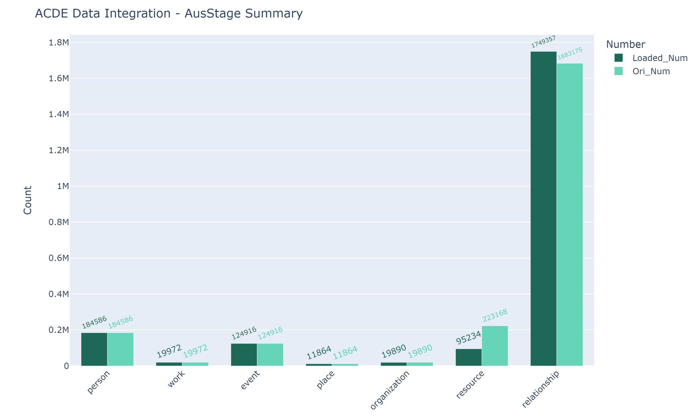

The Australian Live Performance Database
Contents
The Australian Live Performance Database¶
Introduction¶
AusStage provides an accessible online resource for researching live performance in Australia. Development is led by a consortium of universities, government agencies, industry organisations and collecting institutions with funding from the Australian Research Council and other sources.
AusStage is committed to collecting and sharing information about Australian live performance as an ongoing, open-access and collaborative endeavour. By sharing knowledge through AusStage researchers and consumers can learn more about Australian performance than ever before.
The following sections will describe the data processing procedure that integrates AusStage data into ACDE and the data sumary of AusStage.
Data Processing¶
Data Extraction & Exploration¶
The AusStage data was provided in the format of MySQL database dump. It can be downloaded from an API as a compressed file. As the MySQL database was using the storage engine MyISAM, there were no foreign keys could be found in the original database dump. However, the schema of AusStage can be roughly inferred based on the actual display of official website, physical database, expert suggestions as well as previsous documentation. The AusStage Schema is shown as following:

For more detailed of downloading and restoring AusStage database, please check AusStage_DBUpdate.ipynb.
It is noted that for the public data sharing, there is a SPARQL end point that could provide most of the data when ACDE tried to fetch the AusStage data. However, as ACDE require the birth information of contributors for comparison and further research, database dump extraction was chosen to be the final data delivery method to fetch data.
Regarding public data sharing, there is a SPARQL endpoint available on the AusStage website that could provide most of the data required by ACDE. However, as birth information of contributors is needed for comparison and further research, a database dump extraction was chosen as the final data delivery method to fetch data.
During the exploration of the AusStage database, a significant concern was identified that needs to be taken into account when establishing the transforming and loading pipeline. It was found that there might be some ambiguity and incorrectness in the definition of an event in AusStage. The unit definition of an event in AusStage, “a distinct happening defined by title, date, and venue,” might be different from the contributing unit definition in the common sense of performing data analysis. This usually don’t make inconsistency in data integration, however, it might cause confusion and inconvenience in downstream data analysis.
For instance, an actress may have contributed to 30 performances in the whole season of Les Miserables, which means in the AusStage perspective, she has contributed to 30 events. However, in most theatre concepts, this actress only contributed to one event, or more precisely, one production. Additionally, some “concert” events are found to have the same name as the contributors.
For more examples of AusStage event ambiguation, please look into the jupyter notebook AusStage_EventExploration.ipynb. A work-around solution will be described below to adjust this circumstance.
Data Transformation & Loading¶
To address the issue of event ambiguity in the AusStage database, we created a new attribute called “unf_id” (unified ID) to assign the same ID to records that refer to the same individual or entity but are distributed across different records due to various reasons. This includes records for contributors, organizations, venues, and events. Specifically, event records with the same titles that occurred in the same year were grouped together as the same “real event,” or “production” in common theater terminology, unless they had same names as the organizations involved.
For more detailed of creating unified table for data loading, please check “Create Table(s) (for unification)” section in AusStage_DBUpdate.ipynb and the corresponding SQL scripts.
Furthermore, to facilitate table joining during data loading, we created several views and renamed attribute names to match those used in ACDEA.
For more detailed of creating views for data loading, please check “Create Views” section in AusStage_DBUpdate.ipynb and the corresponding SQL scripts.
With these additional attributes and views, it is now possible to map the corresponding entities and attributes of AusStage to the levels and attributes in ACDEA. The related records of the corresponding original records are also aggregated from the relationship level and updated into the related attribute of the original records.
On entity level, the AusStage entity projection is listed as follows:
AusStage Entity (Collection) |
ACDEA Level |
|---|---|
contributor |
person |
work |
work |
event |
event |
- |
recognition |
venue |
place |
organisation |
organization |
item, datasource |
resource |
all xxxxxlink tables, etc |
relationship |
On attribute level, please find the attribute mapping details in the notes of the AusStage data dictionary. The data dictionary can be downloaded below.
For more details of data loading of AusStage, please check jupyter notebook AusStage_Loading.ipynb.
Integration Data Report¶
The following chart, which was generated by the jupyter notebook AusStage_IntegrationSummary.ipynb, illustrates the number of AusStage records before and after integration.
